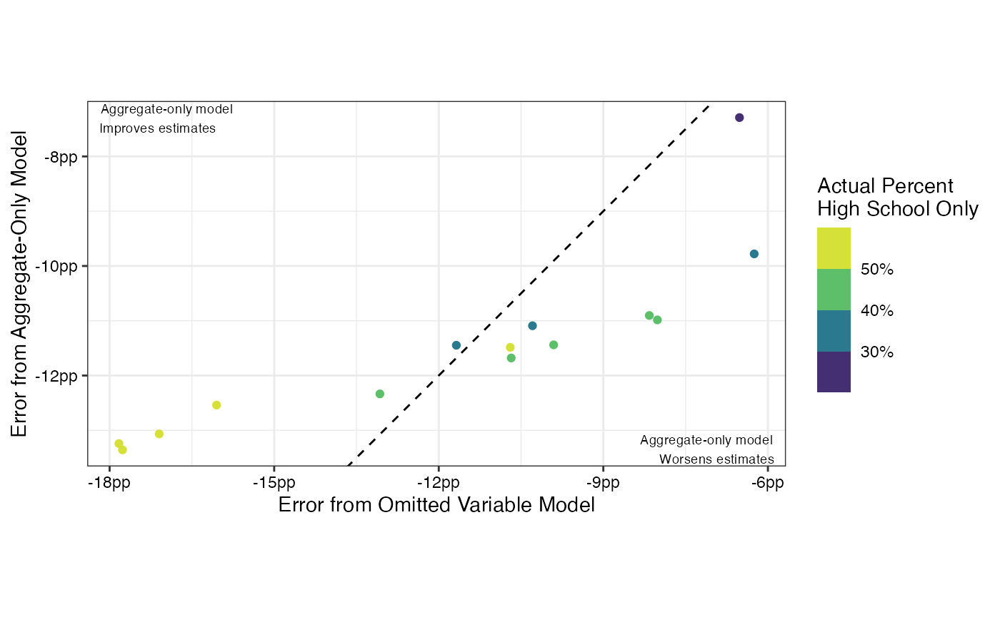

Post-stratification vs. Aggregate Regression Adjustment
Shiro Kuriwaki
Source:vignettes/temp_reg-v-poststrat.Rmd
temp_reg-v-poststrat.RmdVariables like party ID and religion are not available in the population target. This is a major challenge in MRP (see Leemann and Wasserfallen, 2017).
Approach 1: Aggregate Regression
One option that researchers often use is to include a area-level proportion and simply “control” for that aggregate variable in the regression. This is not the same as poststratification, but we believe that it helps to account for this variable in some way. (An alternative option, which I examine in the next section is to impute this to the population target through a machine learning model trained on individual data. This strategy introduces some modeling error but still allows for post-stratification.)
Let’s explore this proposition with a simple test case. Suppose we want to know the proportion of a CD’s adults that have a high school degree or less. This quantity is known in the aggregate and in some joint tables through the ACS, so we have a ground truth in this simulation.
First create the dummy variable of interest.
acs_GA <- acs_GA %>%
mutate(is_HS = as.numeric(educ == "HS or Less"),
is_BA = as.numeric(educ %in% c("4-Year", "Post-Grad")))acs_GA is a sample ACS population table. Education is already in the data, but suppose we do not know it.
With this binary variable, let’s compute the CD-level quantity of interest.
val <- acs_GA %>%
count(cd, is_HS, is_BA, wt = count) %>%
group_by(cd) %>%
summarize(prop_HS_truth = sum(is_HS*n)/sum(n))
acs_df <- left_join(acs_GA, val)
#> Joining, by = "cd"Now suppose we have survey data we want to use for MRP.
cces_df <- cces_GA %>%
# same as ACS manipulation
mutate(is_HS = as.numeric(educ == "HS or Less")) %>%
group_by(cd) %>%
# suppose you know the population aggregate
left_join(distinct(acs_df, cd, prop_HS_truth), by = "cd") %>%
ungroup()we merge prop_HS_truth here like a CD-level election result: we will suppose that we don’t have the educ variable in the ACS but we do know the CD-level aggregate, so we merge that in. Notice that this duplicates the rows for every CCES respondent in a given CD.
Not surprisingly, the CD-level aggregate is predictive of the outcome (coefficient 0.85, t-stat of 7).
Also notice that for this example, we are basically giving away the answer (prop_HS_truth is the quantity of interest, but we are going to throw it in the regression). Usually you have a predictive proxy only, like when you want to estimate the CD-level voteshare and you only have the lagged voteshare. We are giving away the answer to give the “regression” strategy its best case scenario.
Now let’s try three model specifications:
# formula specs ----
mrp_forms <- c(
"omitted" = is_HS ~ (1|cd),
"mean_only" = is_HS ~ (1|cd) + prop_HS_truth,
"oracle" = is_HS ~ (1|cd) + (1|educ)
)"omitted" is a version with no relevant variables in the MRP. "prop_HS_truth" is where we will control for the CD-level predictor but we don’t have the individual level education. "oracle" is the model where we would post-stratify on education – this is what we would do if we have both education in the survey and population joint distribution.
The ccesMRPrun package will do quick MRP in one step with the mrp_onestep() function (see documentation). Let’s run MRP with these three specs, and bind the results.
# run MRP -- only change formulas at each step
mrp_df <- map_dfr(.x = mrp_forms,
.f = function(x) {
mrp_onestep(x,
cces_df,
poststrat_tgt = acs_df,
weight_var = "weight",
add_on = val,
verbose = FALSE,
.cores = 2)},
.id = "spec")
#> Compiling Stan program...
#> Trying to compile a simple C file
#> Running /Library/Frameworks/R.framework/Resources/bin/R CMD SHLIB foo.c
#> clang -mmacosx-version-min=10.13 -I"/Library/Frameworks/R.framework/Resources/include" -DNDEBUG -I"/Users/runner/work/_temp/Library/Rcpp/include/" -I"/Users/runner/work/_temp/Library/RcppEigen/include/" -I"/Users/runner/work/_temp/Library/RcppEigen/include/unsupported" -I"/Users/runner/work/_temp/Library/BH/include" -I"/Users/runner/work/_temp/Library/StanHeaders/include/src/" -I"/Users/runner/work/_temp/Library/StanHeaders/include/" -I"/Users/runner/work/_temp/Library/RcppParallel/include/" -I"/Users/runner/work/_temp/Library/rstan/include" -DEIGEN_NO_DEBUG -DBOOST_DISABLE_ASSERTS -DBOOST_PENDING_INTEGER_LOG2_HPP -DSTAN_THREADS -DBOOST_NO_AUTO_PTR -include '/Users/runner/work/_temp/Library/StanHeaders/include/stan/math/prim/mat/fun/Eigen.hpp' -D_REENTRANT -DRCPP_PARALLEL_USE_TBB=1 -I/usr/local/include -fPIC -Wall -g -O2 -c foo.c -o foo.o
#> In file included from <built-in>:1:
#> In file included from /Users/runner/work/_temp/Library/StanHeaders/include/stan/math/prim/mat/fun/Eigen.hpp:13:
#> In file included from /Users/runner/work/_temp/Library/RcppEigen/include/Eigen/Dense:1:
#> In file included from /Users/runner/work/_temp/Library/RcppEigen/include/Eigen/Core:88:
#> /Users/runner/work/_temp/Library/RcppEigen/include/Eigen/src/Core/util/Macros.h:628:1: error: unknown type name 'namespace'
#> namespace Eigen {
#> ^
#> /Users/runner/work/_temp/Library/RcppEigen/include/Eigen/src/Core/util/Macros.h:628:16: error: expected ';' after top level declarator
#> namespace Eigen {
#> ^
#> ;
#> In file included from <built-in>:1:
#> In file included from /Users/runner/work/_temp/Library/StanHeaders/include/stan/math/prim/mat/fun/Eigen.hpp:13:
#> In file included from /Users/runner/work/_temp/Library/RcppEigen/include/Eigen/Dense:1:
#> /Users/runner/work/_temp/Library/RcppEigen/include/Eigen/Core:96:10: fatal error: 'complex' file not found
#> #include <complex>
#> ^~~~~~~~~
#> 3 errors generated.
#> make: *** [foo.o] Error 1
#> Start sampling
#> Compiling Stan program...
#> Trying to compile a simple C file
#> Running /Library/Frameworks/R.framework/Resources/bin/R CMD SHLIB foo.c
#> clang -mmacosx-version-min=10.13 -I"/Library/Frameworks/R.framework/Resources/include" -DNDEBUG -I"/Users/runner/work/_temp/Library/Rcpp/include/" -I"/Users/runner/work/_temp/Library/RcppEigen/include/" -I"/Users/runner/work/_temp/Library/RcppEigen/include/unsupported" -I"/Users/runner/work/_temp/Library/BH/include" -I"/Users/runner/work/_temp/Library/StanHeaders/include/src/" -I"/Users/runner/work/_temp/Library/StanHeaders/include/" -I"/Users/runner/work/_temp/Library/RcppParallel/include/" -I"/Users/runner/work/_temp/Library/rstan/include" -DEIGEN_NO_DEBUG -DBOOST_DISABLE_ASSERTS -DBOOST_PENDING_INTEGER_LOG2_HPP -DSTAN_THREADS -DBOOST_NO_AUTO_PTR -include '/Users/runner/work/_temp/Library/StanHeaders/include/stan/math/prim/mat/fun/Eigen.hpp' -D_REENTRANT -DRCPP_PARALLEL_USE_TBB=1 -I/usr/local/include -fPIC -Wall -g -O2 -c foo.c -o foo.o
#> In file included from <built-in>:1:
#> In file included from /Users/runner/work/_temp/Library/StanHeaders/include/stan/math/prim/mat/fun/Eigen.hpp:13:
#> In file included from /Users/runner/work/_temp/Library/RcppEigen/include/Eigen/Dense:1:
#> In file included from /Users/runner/work/_temp/Library/RcppEigen/include/Eigen/Core:88:
#> /Users/runner/work/_temp/Library/RcppEigen/include/Eigen/src/Core/util/Macros.h:628:1: error: unknown type name 'namespace'
#> namespace Eigen {
#> ^
#> /Users/runner/work/_temp/Library/RcppEigen/include/Eigen/src/Core/util/Macros.h:628:16: error: expected ';' after top level declarator
#> namespace Eigen {
#> ^
#> ;
#> In file included from <built-in>:1:
#> In file included from /Users/runner/work/_temp/Library/StanHeaders/include/stan/math/prim/mat/fun/Eigen.hpp:13:
#> In file included from /Users/runner/work/_temp/Library/RcppEigen/include/Eigen/Dense:1:
#> /Users/runner/work/_temp/Library/RcppEigen/include/Eigen/Core:96:10: fatal error: 'complex' file not found
#> #include <complex>
#> ^~~~~~~~~
#> 3 errors generated.
#> make: *** [foo.o] Error 1
#> Start sampling
#> Compiling Stan program...
#> Trying to compile a simple C file
#> Running /Library/Frameworks/R.framework/Resources/bin/R CMD SHLIB foo.c
#> clang -mmacosx-version-min=10.13 -I"/Library/Frameworks/R.framework/Resources/include" -DNDEBUG -I"/Users/runner/work/_temp/Library/Rcpp/include/" -I"/Users/runner/work/_temp/Library/RcppEigen/include/" -I"/Users/runner/work/_temp/Library/RcppEigen/include/unsupported" -I"/Users/runner/work/_temp/Library/BH/include" -I"/Users/runner/work/_temp/Library/StanHeaders/include/src/" -I"/Users/runner/work/_temp/Library/StanHeaders/include/" -I"/Users/runner/work/_temp/Library/RcppParallel/include/" -I"/Users/runner/work/_temp/Library/rstan/include" -DEIGEN_NO_DEBUG -DBOOST_DISABLE_ASSERTS -DBOOST_PENDING_INTEGER_LOG2_HPP -DSTAN_THREADS -DBOOST_NO_AUTO_PTR -include '/Users/runner/work/_temp/Library/StanHeaders/include/stan/math/prim/mat/fun/Eigen.hpp' -D_REENTRANT -DRCPP_PARALLEL_USE_TBB=1 -I/usr/local/include -fPIC -Wall -g -O2 -c foo.c -o foo.o
#> In file included from <built-in>:1:
#> In file included from /Users/runner/work/_temp/Library/StanHeaders/include/stan/math/prim/mat/fun/Eigen.hpp:13:
#> In file included from /Users/runner/work/_temp/Library/RcppEigen/include/Eigen/Dense:1:
#> In file included from /Users/runner/work/_temp/Library/RcppEigen/include/Eigen/Core:88:
#> /Users/runner/work/_temp/Library/RcppEigen/include/Eigen/src/Core/util/Macros.h:628:1: error: unknown type name 'namespace'
#> namespace Eigen {
#> ^
#> /Users/runner/work/_temp/Library/RcppEigen/include/Eigen/src/Core/util/Macros.h:628:16: error: expected ';' after top level declarator
#> namespace Eigen {
#> ^
#> ;
#> In file included from <built-in>:1:
#> In file included from /Users/runner/work/_temp/Library/StanHeaders/include/stan/math/prim/mat/fun/Eigen.hpp:13:
#> In file included from /Users/runner/work/_temp/Library/RcppEigen/include/Eigen/Dense:1:
#> /Users/runner/work/_temp/Library/RcppEigen/include/Eigen/Core:96:10: fatal error: 'complex' file not found
#> #include <complex>
#> ^~~~~~~~~
#> 3 errors generated.
#> make: *** [foo.o] Error 1
#> Start sampling
mrp_df
#> # A tibble: 42 x 11
#> spec p_raw p_wt cd n_raw p_mrp_est p_mrp_050 p_mrp_100 p_mrp_900
#> <chr> <dbl> <dbl> <chr> <int> <dbl> <dbl> <dbl> <dbl>
#> 1 omit… 0.344 0.530 GA-01 128 0.337 0.277 0.289 0.386
#> 2 omit… 0.353 0.584 GA-02 116 0.345 0.280 0.293 0.398
#> 3 omit… 0.391 0.474 GA-03 138 0.379 0.319 0.330 0.428
#> 4 omit… 0.266 0.380 GA-04 207 0.271 0.224 0.233 0.311
#> 5 omit… 0.219 0.436 GA-05 187 0.233 0.186 0.196 0.270
#> 6 omit… 0.113 0.162 GA-06 141 0.154 0.105 0.115 0.194
#> 7 omit… 0.226 0.322 GA-07 146 0.242 0.190 0.201 0.285
#> 8 omit… 0.345 0.500 GA-08 113 0.338 0.272 0.287 0.391
#> 9 omit… 0.343 0.457 GA-09 134 0.338 0.277 0.291 0.385
#> 10 omit… 0.380 0.498 GA-10 142 0.369 0.307 0.320 0.418
#> # … with 32 more rows, and 2 more variables: p_mrp_950 <dbl>,
#> # prop_HS_truth <dbl>Now let’s plot the MRP results.
mrp_plot <- mrp_df %>%
mutate(spec = fct_inorder(spec))
scatter_45(mrp_plot,
prop_HS_truth,
p_mrp_est,
lbvar = p_mrp_050,
ubvar = p_mrp_900,
by_form = ~spec,
show_error = TRUE,
by_labels = c(omitted = "~ (1|cd)",
mean_only = "~ (1|cd) + proportion HS",
oracle = "~ (1|cd) + (1|education)"),
xlab = "True Proportion of Adults with High School - only Education",
ylab = "MRP Estimate") +
labs(caption = "Note: Estimand is proportion of CD that has a high school education or less.
First model does not account for education.
Third model poststratifies on education, and is therefore perfectly correct.
Second model is only given CD-level proportion of High School-only graduates (the truth).")
Notice that the second model where we only control for the CD-level aggregate will tighten the estimates around a 45 degree angle, but it does not make the estimates more representative. There is still a bias of the survey undersampling HS-only voters, and controlling for an aggregate does not solve this question.
With a closer look, we see that including the aggregate variable worsens some estimates in this case. High education districts get their estimates pulled away from the truth, while low education districts improve. This again seems to be a function of pooling where the errors become more homogeneous.

Approach 2: Synthetic Joint Estimation
Instead of including the aggregate information, others might opt to model a synthetic joint distribution. The ccesMRPprep function provides several methods to compute such a synthetic table.
acs_syn_mlogit <- synth_mlogit(educ ~ female + age,
microdata = cces_GA,
poptable = acs_df, # internally will be treated as if we don't know education
area_var = "cd")On average, this produces a model where the margins are smoothed out nationally. In the CCES survey sample, 31% have a “HS or Less” degree, so it seems like the numbers match that. This is not surprising because there are CD “fixed effects” not captured by gender and age, but it is nonethless troubling for MRP.
The ccesMRPprep package provide two other approaches to estimating the joint – these incorporate another source of information, which is the margins that are available.
edu_margins <- collapse_table(acs_GA, area_var = "cd", X_vars = "educ",
count_var = "count", new_name = "count")
edu_margins
#> # A tibble: 56 x 3
#> cd educ count
#> <chr> <fct> <dbl>
#> 1 GA-01 HS or Less 243060
#> 2 GA-01 Some College 182614
#> 3 GA-01 4-Year 77683
#> 4 GA-01 Post-Grad 44842
#> 5 GA-02 HS or Less 271726
#> 6 GA-02 Some College 167144
#> 7 GA-02 4-Year 50349
#> 8 GA-02 Post-Grad 29694
#> 9 GA-03 HS or Less 246159
#> 10 GA-03 Some College 168159
#> # … with 46 more rowsGiven this data that is simply the marginal distribution of education in each CD, one option is to simply take the product assuming independence
acs_syn_prod <- synth_prod(educ ~ female + age,
poptable = acs_GA,
newtable = edu_margins,
area_var = "cd")and another is to first comibine the survey modeling then fix those margins to the known population margins.
acs_syn_fix <- synth_smoothfix(educ ~ female + age,
microdata = cces_GA,
poptable = acs_GA,
fix_to = edu_margins,
area_var = "cd")See the ccesMRPprep vignette for validation.
In any case, this allows us to run MRP using this “synthetic” target. Now let’s fix the specification and vary the targets
syn_datasets <- list(
"survey" = acs_syn_mlogit,
"product" = acs_syn_prod,
"surveyfix" = acs_syn_fix
)
mrsp_df <- map_dfr(.x = syn_datasets,
.f = function(x) {
mrp_onestep(is_HS ~ (1|educ) + (1|cd),
cces_df,
poststrat_tgt = mutate(x, count = as.integer(count)),
weight_var = "weight",
add_on = val,
verbose = FALSE,
.cores = 2)},
.id = "synth")
#> Compiling Stan program...
#> Start sampling
#> Compiling Stan program...
#> Start sampling
#> Compiling Stan program...
#> Start samplingAnd examine the outcome.

The first estimate look bad. If the imputation is faulty, it is not a good idea to use that to post-stratify, either. The only reason the second and third estimates are perfect is because we asked MRP for an outcome for which we supplied the joint for. If we were estimating a different outcome for which the margins are not known (which in practice is always the case), the values would change, of course.